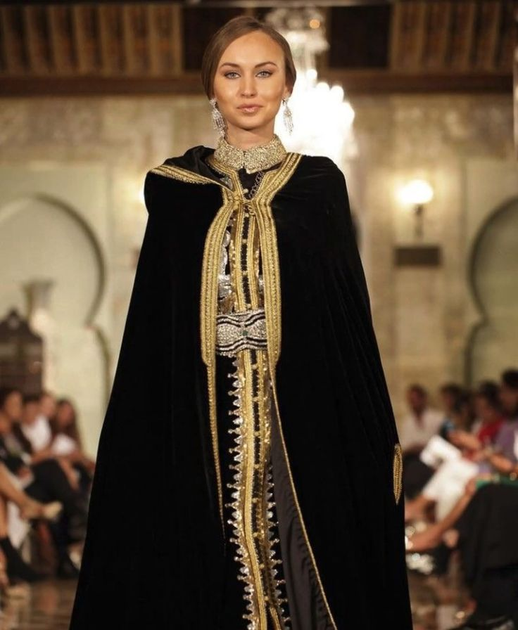

A Regional Journey Through Tunisian Craftsmanship

This is not just a dress; it is a monument of Tunisian gold-work. Known for its 'Taksila' (the majestic gold-draped sleeves) and its multi-layered embroidery, the Hammamet Kaftan ensemble is the ultimate symbol of wealth and status. Every stitch is done by hand, using authentic gold 'Kountir' to create patterns that have been preserved for centuries.

The Safsari is a legendary cream-colored silk veil that represents the urban elegance of the capital. It wraps the wearer in a cloud of mystery and modesty, once the standard attire for every woman walking through the stone alleys of the ancient Medina.

Djerba’s attire is a colorful reflection of island life. It is famous for its bright, hand-woven striped silk 'Melhafa' and the iconic conical straw hat known as the 'Dhalla,' protecting women from the intense Mediterranean sun.

The Red Malyia is the ancient Berber soul of Tunisia. This draped woolen garment is held together by large silver brooches called 'Khelal.' It is a symbol of ancestral pride, often decorated with geometric patterns reflecting the history of the South.

A majestic hooded cloak made from the finest camel or sheep wool. The Barnouss is the garment of kings and elders, representing protection, dignity, and masculine authority across the Tunisian mountains and plains.

The classic urban male look. The silk Jebba is hand-embroidered by the masters of the Souks, always topped with the world-famous red wool Chechia. This duo is the standard for weddings and religious ceremonies.

The Tunisian Kaftan is a symbol of absolute luxury. It is distinguished by its meticulous gold embroidery known as 'Kountir' and its unique cut that blends Andalusian influences with Ottoman-Tunisian refinement. Every Kaftan is a work of art, taking months of hand-stitching to reach perfection.

The Fouta & Blouza is a legendary two-piece outfit that defines Tunisian coastal fashion. It features the 'Blouza,' a beautifully tailored bodice, and the 'Fouta,' a graceful wrap skirt. Every piece is a labor of love, shimmering with silver threads, sequins, and delicate lace, traditionally worn during the 'Henna' and 'Wtiyya' nights.
Don't just look at the photos. Let us organize a Custom Cultural Circuit for you. From private fittings with master tailors in the Souks to exclusive photo sessions in historic palaces, we design every detail of your dream trip.